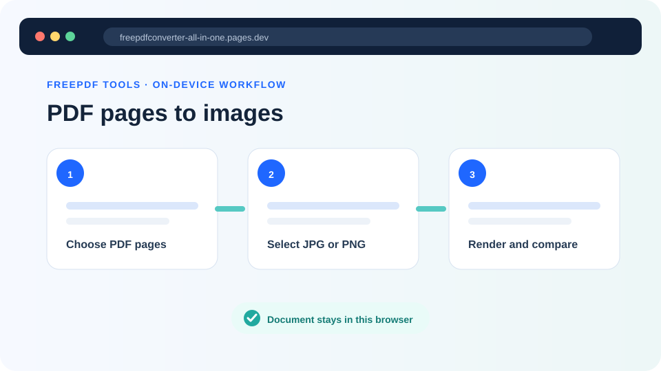
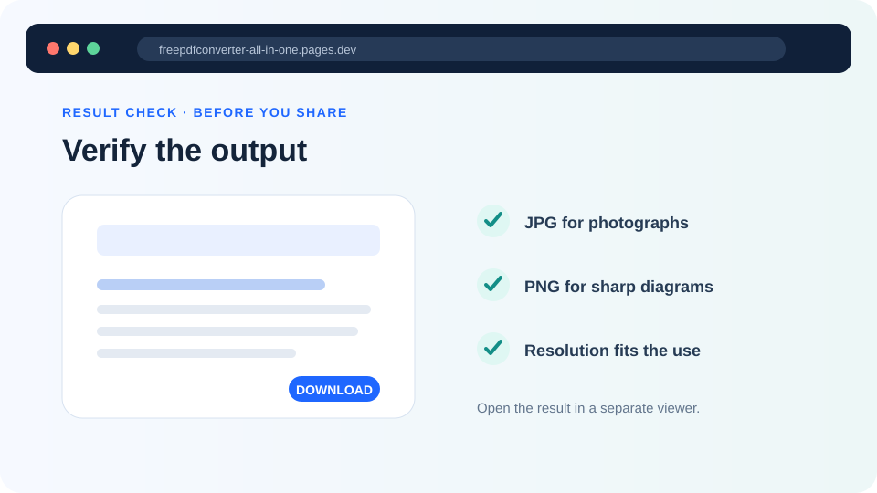

PDF to JPG vs PNG: which image format is better?
Choose JPG for smaller photo-heavy pages or PNG for lossless screenshots, forms, diagrams and text-heavy content.
Updated August 11, 2026 · By FreePDF Tools · 6 minute read


JPG and PNG compared
| Feature | JPG | PNG |
|---|---|---|
| Compression | Lossy; discards some visual detail to reduce size | Lossless; preserves exported pixel values |
| Typical file size | Usually smaller for scans and photographs | Often larger, especially for photo-heavy pages |
| Sharp text and lines | Can show compression artefacts | Usually cleaner for screenshots, forms and diagrams |
| Transparency | Not supported; the tool uses a white background | Supported by the format |
| Best general use | Email, previews, photo scans and smaller downloads | UI screenshots, line art, text and lossless archiving of the rendered page |
Both formats contain pixels. Once a PDF page has been rendered as an image, searchable text, selectable text, links and vector scaling are not preserved inside that image file. Keep the source PDF whenever those features matter.
Choose the format by page content
- Scanned photograph or brochure: JPG usually gives a practical balance of detail and size.
- Application form or text-heavy page: PNG avoids JPG ringing around sharp characters and lines.
- Software screenshot: PNG generally preserves interface edges and small labels better.
- Quick sharing preview: JPG is often easier when attachment size matters.
- Page requiring transparency: choose PNG, although most PDF pages render against an opaque background.
Standard, high or very-high resolution
Resolution controls the number of output pixels, not the amount of detail present in the source. Standard is faster and uses less memory. High is the balanced default for reading and normal sharing. Very high is useful for zooming or print preparation, but it increases memory use and output size.
For JPG, the Smaller, Balanced and Maximum settings control compression quality. Maximum does not create detail that the PDF lacks; it simply preserves more of the rendered pixels and produces a larger file.
How to convert PDF pages to JPG or PNG
- Open PDF to JPG / PNG and select your PDF.
- Enter the first and last page to convert.
- Choose JPG or PNG.
- Select a resolution. If using JPG, choose the required quality.
- Start conversion and leave the tab open while pages render.
- A single page downloads as an image; multiple pages download together as a ZIP.
Convert selected PDF pages
Render up to 60 pages per batch directly in your browser.
Browser limits and troubleshooting
The tool limits one batch to 60 pages to protect browser memory. Very-high resolution multiplies the pixel area of every rendered page, so a shorter range may be necessary on phones or low-memory computers.
| Problem | What to try |
|---|---|
| Text looks blurred | Choose PNG or increase the resolution; also check whether the original PDF already contains a low-resolution scan. |
| Files are too large | Use JPG with Balanced quality or lower the resolution. |
| The browser slows down | Convert a smaller page range, choose Standard resolution and close unused tabs. |
| The PDF will not open | It may be encrypted or invalid. Verify it in a trusted reader, then use Unlock PDF with the known password when authorized. |
| Several images downloaded as ZIP | This is expected and prevents the browser from prompting separately for every page. |
Rendering is not image extraction
This tool uses PDF.js to draw the complete visible page—text, vectors, images and layout—onto a browser canvas. It does not extract the original image objects stored inside the PDF. The output therefore represents the whole page as it appears at the selected resolution.